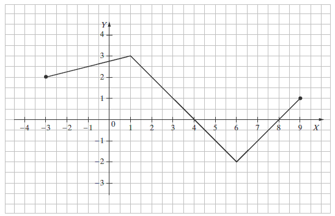

⠀
Jesteś tutaj:
Szkoła
→
Funkcje
→
Funkcja liniowa
→
Funkcja liniowa - zadania z parametrem
◀ Miejsce zerowe funkcji liniowej
Inne zadania z funkcji liniowej ▶
Funkcja liniowa - zadania z parametrem
Punkt \(A=(0, 1)\) leży na wykresie funkcji liniowej
\(f(x)=(m-2)x+m-3\)
. Stąd wynika, że
A.
\( m=1 \)
B.
\( m=2 \)
C.
\( m=3 \)
D.
\( m=4 \)
D
Wskaż \(m\), dla którego funkcja liniowa
\(f(x)=(m−1)x+6\)
jest rosnąca
A.
\( m=-1 \)
B.
\( m=0 \)
C.
\( m=1 \)
D.
\( m=2 \)
D
Wskaż \(m\), dla którego funkcja liniowa określona wzorem
\(f(x)=(m - 1)x+3\)
jest stała.
A.
\( m=1 \)
B.
\( m=2 \)
C.
\( m=3 \)
D.
\( m=-1 \)
A
Funkcja liniowa
\(f(x)=(m^2-1)x-7\)
jest malejąca, jeśli:
A.
\( m\in \mathbb{R} \)
B.
\( m\in (-\infty , -1) \)
C.
\( m\in (-1, 1) \)
D.
\( m\in (-\infty , 0) \)
C
Funkcja \(f\) jest określona wzorem
\(f(x)=5x-m\),
gdzie \(m\lt 0\). Wówczas spełniony jest warunek
A.
\( f(1)\lt 0 \)
B.
\( f(2)>10 \)
C.
\( f(3)<-3 \)
D.
\( f(4)=20 \)
B
Prosta o równaniu
\(y=-2x+(3m+3)\)
przecina w układzie współrzędnych oś \(Oy\) w punkcie \((0,2)\). Wtedy
A.
\( m=-\frac{2}{3} \)
B.
\( m=-\frac{1}{3} \)
C.
\( m=\frac{1}{3} \)
D.
\( m=\frac{5}{3} \)
B
Funkcja liniowa \( f \) jest określona wzorem \( f(x)=ax+6 \), gdzie \( a>0 \). Wówczas spełniony jest warunek
A.
\(f(1)>1 \)
B.
\(f(2)=2 \)
C.
\(f(3)\lt 3 \)
D.
\(f(4)=4 \)
A
Dana jest funkcja \(f(x) = (1 + m^2)x - 5\). Oblicz współczynnik \(m\) jeżeli wiadomo, że \(x = 1\) jest miejscem zerowym funkcji \(f(x)\).
\(m=-2\) lub \(m=2\)
Wyznacz wszystkie parametry \(m\) dla których prosta o równaniu
\(y = (m - 1)x + 5\)
jest
rosnąca
równoległa do prostej \(y = -6x + 3\)
a) \(m\gt 1\)
b) \(m=-5\)
Wyznacz wszystkie parametry \(m\) dla których prosta o równaniu
\(y = (3 - 2m)x + 5\)
jest
malejąca
prostopadła do prostej \(y = 2x-3\)
a) \(m\gt \frac{3}{2}\)
b) \(m=\frac{7}{4}\)
Miejscem zerowym funkcji liniowej
\(f(x)=-2x+m+7\)
jest liczba \(3\). Wynika stąd, że
A.
\( m=7 \)
B.
\( m=1 \)
C.
\( m=-1 \)
D.
\( m=-7 \)
C
Proste o równaniach
\(y=2x-5\)
i
\(y=(3-m)x+4\)
są równoległe. Wynika stąd, że
A.
\( m=1 \)
B.
\( m=\frac{5}{2} \)
C.
\( m=\frac{7}{2} \)
D.
\( m=5 \)
A
Funkcja liniowa
\(f(x)=(m-2)x-11\)
jest rosnąca dla
A.
\( m>2 \)
B.
\( m>0 \)
C.
\( m\lt 13 \)
D.
\( m\lt 11 \)
A
Liczba \( 1 \) jest miejscem zerowym funkcji liniowej
\( f(x)=(2-m)x+1 \)
. Wynika stąd, że
A.
\(m=0 \)
B.
\(m=1 \)
C.
\(m=2 \)
D.
\(m=3 \)
D
Rysunek przedstawia wykres funkcji \(y=f(x)\).  Funkcja jest malejąca w przedziale
A.
\( \langle 0,4 \rangle \)
B.
\( \langle 1,6 \rangle \)
C.
\( \langle 0,6 \rangle \)
D.
\( \langle -2,4 \rangle \)
B
Na wykresie funkcji liniowej określonej wzorem \(f(x)=(m-1)x+3\) leży punkt \(S=(5,-2)\). Zatem
A.
\( m=1 \)
B.
\( m=2 \)
C.
\( m=-1 \)
D.
\( m=0 \)
D
Punkt \(M=\left ( \frac{1}{2},3 \right )\) należy do wykresu funkcji liniowej określonej wzorem \(f(x)=(3-2a)x+2\). Wtedy
A.
\( a=-\frac{1}{2} \)
B.
\( a=2 \)
C.
\( a=\frac{1}{2} \)
D.
\( a=-2 \)
C
◀ Miejsce zerowe funkcji liniowej
Inne zadania z funkcji liniowej ▶